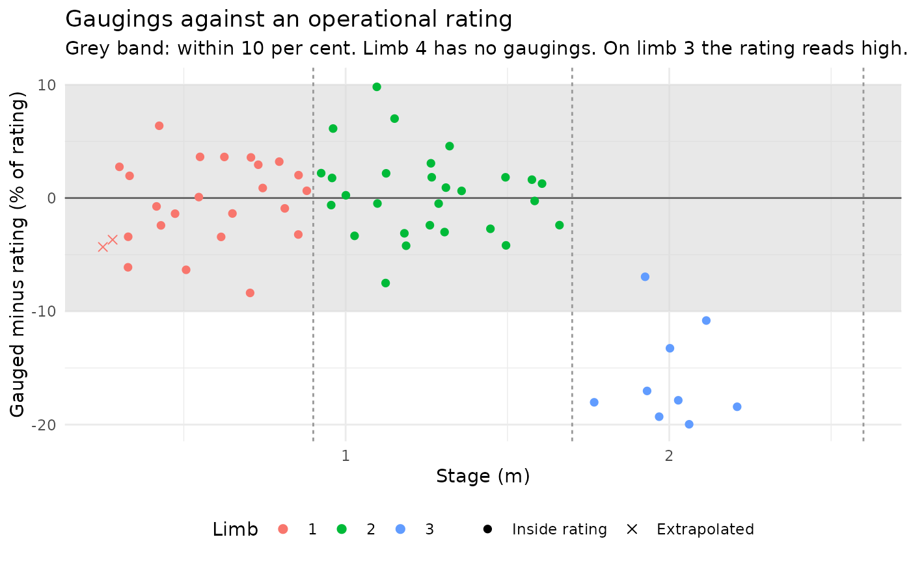

Checks a rating against spot gaugings: for each gauging, what the rating predicts at that stage and how far the gauged discharge is from it; for each limb, how many gaugings sit on it, over what stage range, and how closely the limb fits them. The gaugings need not be the ones the rating was fitted to, so this suits an operational rating checked against a full gauging archive.
It reports and does not judge. A limb with no gaugings (has_gaugings
is FALSE) is not wrong, but nothing in the supplied gaugings supports
it, which is what you would expect of a limb modelled for high flows.
A gauging below the lowest limb or above the highest is evaluated by
extrapolating the nearest limb, as apply_rating() does, and flagged
extrapolated; extrapolated gaugings are counted separately and left
out of each limb's fit statistics, so a limb's bias is measured only
on stage it actually covers.
Usage
compare_gaugings_to_rating(
rating,
gaugings,
stage_col = "stage_m",
discharge_col = "discharge_cms",
tol_rel = 0.1
)Arguments
- rating
A FlodeRating, a FlodeRatingTable, or a data.frame/data.table with
lower_level,upper_level,C,aandn, one row per limb, contiguous. AFlodeRatingis bridged throughas_rating_table()first.- gaugings
A data.frame or data.table with a stage column and a discharge column. Other columns, such as a station or date, are carried through unchanged. Rows with a missing stage or discharge are kept, with missing results, and never dropped.
- stage_col, discharge_col
Character. Names of the stage (m) and discharge (cumecs) columns of
gaugings. Defaults"stage_m"and"discharge_cms". Both must be numeric.- tol_rel
Numeric. A gauging counts as within tolerance when its discharge is within this fraction of the rating's prediction. Default
0.10, that is 10 per cent. A gauging exactly on the tolerance counts as within it.
Value
A list of two data.tables.
gaugings:gaugingswith columns added:limb(the row of the rating whose equation was used, the nearest limb for an extrapolated gauging),extrapolated,discharge_predicted_cms,residual_cms(gauged minus predicted),residual_pct(residual as a percentage of the prediction,NAwhere the prediction is zero) andwithin_tol.limbs: one row per limb of the rating, withlimb,lower_level,upper_level,n_gaugings(inside the limb's range),n_extrapolated(gaugings that fell outside the rating and were assigned to this limb),gauged_min_stageandgauged_max_stage(NAwith no gaugings),median_residual_pct(positive means the gaugings sit above the rating),spread_pct(interquartile range ofresidual_pct),share_within_tolandhas_gaugings.
Why medians
A percentage residual is unstable where the rating predicts a very
small discharge: a gauging of 0.3 cumecs at a stage where the rating
gives 0.00000001 is 3 billion per cent out. Archives often hold such
rows (a stage of zero with a measured flow, for example). A mean or a
root mean square would be set by that one row, so each limb is
summarised by the median and the interquartile range of residual_pct,
and by the share of gaugings within tolerance, none of which a single
extreme row can move. The row itself stays visible in gaugings.
See also
read_gaugings() and read_operational_ratings() to bring in
a gauging archive and a ratings export;
compare_ratings() to compare two ratings with each other;
flag_extrapolated_limbs() and plot_rating_residuals() for a fit
against the gaugings it was fitted to.
Examples
# A four-limb operational rating, with limbs that meet in discharge
rating_dt <- data.table::data.table(
lower_level = c(0.30, 0.90, 1.70, 2.60),
upper_level = c(0.90, 1.70, 2.60, 4.00),
C = c(1.80000, 2.85549, 4.72355, 2.36038),
a = c(0.10, 0.25, 0.55, 0.40),
n = c(1.60, 1.90, 1.45, 2.20)
)
rating <- FlodeRatingTable(table = rating_dt)
# An archive of spot gaugings. Gaugings reach only stage 2.3, so the
# top limb has none. The truth in the bankfull limb (1.7 to 2.6 m) is
# 15 per cent below what the rating says, and two gaugings were taken
# below the lowest limb.
set.seed(11)
stage_m <- c(0.25, 0.28, sort(runif(60, 0.3, 2.3)))
predicted <- apply_rating(rating, stage_m)$discharge
#> INFO [2026-11-18 16:14:38] apply_rating(): 2 of 62 stage value(s) fell outside the rating and were extrapolated.
truth_factor <- ifelse(stage_m >= 1.7, 0.85, 1)
gaugings <- data.frame(
stage_m = stage_m,
discharge_cms = predicted * truth_factor * exp(rnorm(length(stage_m), sd = 0.04))
)
check <- compare_gaugings_to_rating(rating, gaugings)
check$limbs
#> limb lower_level upper_level n_gaugings n_extrapolated gauged_min_stage
#> <int> <num> <num> <int> <int> <num>
#> 1: 1 0.3 0.9 23 2 0.3010366
#> 2: 2 0.9 1.7 28 0 0.9244093
#> 3: 3 1.7 2.6 9 0 1.7679750
#> 4: 4 2.6 4.0 0 0 NA
#> gauged_max_stage median_residual_pct spread_pct share_within_tol
#> <num> <num> <num> <num>
#> 1: 0.879950 0.0815590 5.663140 1.0000000
#> 2: 1.660735 0.4346041 4.398403 1.0000000
#> 3: 2.209698 -17.8523789 5.163368 0.1111111
#> 4: NA NA NA NA
#> has_gaugings
#> <lgcl>
#> 1: TRUE
#> 2: TRUE
#> 3: TRUE
#> 4: FALSE
head(check$gaugings)
#> stage_m discharge_cms limb extrapolated discharge_predicted_cms
#> <num> <num> <int> <lgcl> <num>
#> 1: 0.2500000 0.08276279 1 TRUE 0.08650048
#> 2: 0.2800000 0.11153500 1 TRUE 0.11579999
#> 3: 0.3010366 0.14200437 1 FALSE 0.13820151
#> 4: 0.3275612 0.15820699 1 FALSE 0.16851153
#> 5: 0.3280958 0.16336080 1 FALSE 0.16914541
#> 6: 0.3324292 0.17772854 1 FALSE 0.17431609
#> residual_cms residual_pct within_tol
#> <num> <num> <lgcl>
#> 1: -0.003737687 -4.321001 TRUE
#> 2: -0.004264987 -3.683063 TRUE
#> 3: 0.003802857 2.751675 TRUE
#> 4: -0.010304537 -6.115034 TRUE
#> 5: -0.005784615 -3.419907 TRUE
#> 6: 0.003412452 1.957623 TRUE
library(ggplot2)
plot_dt <- check$gaugings
plot_dt$limb <- factor(plot_dt$limb)
ggplot(plot_dt, aes(stage_m, residual_pct, colour = limb, shape = extrapolated)) +
annotate("rect", xmin = -Inf, xmax = Inf, ymin = -10, ymax = 10,
fill = "grey85", alpha = 0.6) +
geom_hline(yintercept = 0, colour = "grey40") +
geom_vline(xintercept = rating_dt$upper_level[-4], linetype = "22", colour = "grey60") +
geom_point(size = 2) +
scale_shape_manual(values = c(`FALSE` = 16, `TRUE` = 4),
labels = c(`FALSE` = "Inside rating", `TRUE` = "Extrapolated")) +
labs(x = "Stage (m)", y = "Gauged minus rating (% of rating)",
colour = "Limb", shape = NULL,
title = "Gaugings against an operational rating",
subtitle = "Grey band: within 10 per cent. Limb 4 has no gaugings. On limb 3 the rating reads high.") +
theme_minimal() +
theme(legend.position = "bottom")
